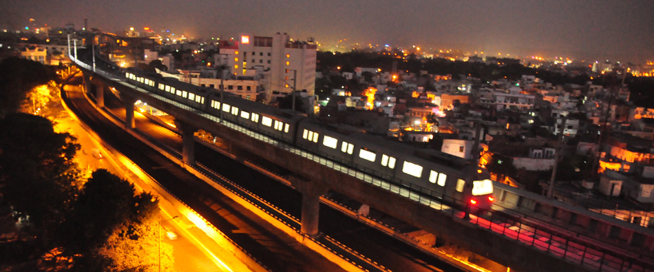
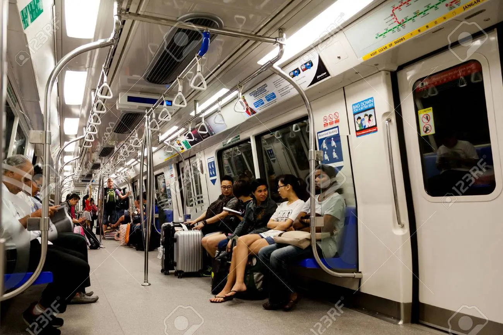
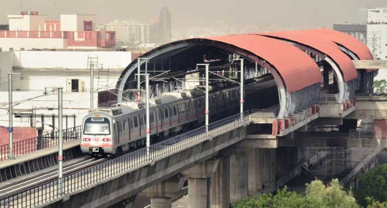
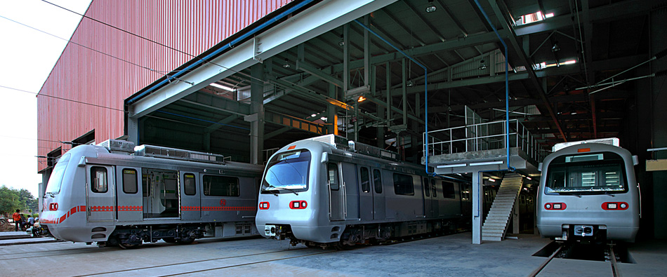
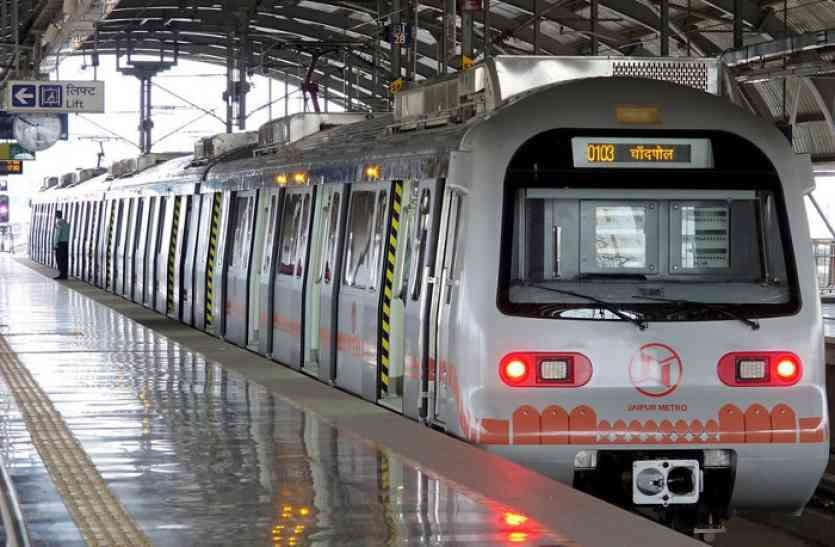

The Jaipur Metro (Hindi: जयपुर मेट्रो) is a rapid transit system in the city of Jaipur, Rajasthan, India.[6] Construction on the mostly elevated part of the first line, called Phase 1A, comprising 9.63 kilometres (5.98 mi) of route from Mansarovar to Chandpole Bazaar,[1] started in November 2010,[7] and was completed in 2014. The Jaipur Metro began commercial service between Chandpole and Mansarovar on 3 June 2015.[5] The Jaipur Metro Rail system is India's sixth metro rail system after those in Kolkata, Delhi, Bangalore, Gurugram and Mumbai. The Jaipur Metro is the first metro in India to run on triple-storey elevated road and metro track. Phase 1-B, from Chandpole to Badi Chaupar, began operation on 23 September 2020.

The Jaipur Metro is being built in 2 phases. Phase I consists of the Pink Line[1] and Phase II consists of the Orange Line. Currently[when?], the Orange Line is under construction. The implementation of Phase 1A of the project (Mansarover to Chandpole having the length of about 9.63 km) including the civil works, permanent way, depot and traction and power supply, etc. was being managed by DMRC.[13][14] Phase I-A completed 9 stations and 9.63 kilometres (5.98 mi) of route length,[1] of which 0.95 kilometres (0.59 mi) is underground and 9.13 kilometres (5.67 mi) is elevated. The remainder of the first line, Phase I-B [2.34 kilometres (1.45 mi), 2 stations], got completed by 23 September 2020. Phase II (23.099 kilometres (14.353 mi), 20 stations) is planned to be completed by 2021.[citation needed] With the completion of Phases 1 and II, the network will span 35.078 kilometres (21.796 mi) and 31 stations.
The first route of Jaipur Metro (East-West Corridor) connect Mansarovar to Badi Chaupar via Civil Lines and Chandpole. In Phase I-A, the metro was operating between Mansarovar to Chandpole. The construction of Phase-1B between Chandpole and Badi Chaupar is completed. This is the Metro line that got flagged off on 5 June 2015, and has been named as Pink Line, as it takes passengers to the Pink City.[1] The depot for this line is situated at Mansarovar.[16] Jaipur Metro was planned to be built in phases. Phase-1A (9.63 km) was completed in 2014, and Phase-1B was completed in 2020 and Phase II is scheduled for completion in 2020.
A concession for operation and maintenance of the Stage 1 and Stage 2 is to be let on PPP basis. Jaipur Metro running on double-storey elevated track Trains operate at a frequency of 10 to 15 minutes between 6:45 and 21:00 depending peak and off-peak time. Trains operating within the network typically travel at speed up to 40 km/h (25 mph), and stop for about 20–40 seconds at each station. Automated station announcements are recorded in Hindi and English. Many stations have services such as Parking lot, ATMs and mobile recharge. Eating, drinking, smoking, and chewing of gum are prohibited in the entire system. The metro also has a sophisticated fire alarm system for advance warning in emergencies, and fire retardant material is used in trains as well as on the premises of stations. Navigation information will sooner be available on Google Transit. The first coach of every train is reserved for women Security The responsibility of security of Jaipur Metro has been entrusted to Rajasthan Police. A strength of 789 police personnel has been sanctioned for security and policing of Jaipur Metro. Latest security equipments have been provided at all Metro Stations.[1] Closed-circuit cameras from IndigoVision are used to monitor trains and stations, and feed from these is monitored by Rajasthan Police and Jaipur Metro authorities at their respective control rooms. In addition metal detectors, X-ray baggage inspection systems, and dog squads are also deployed which are used to secure the system. Each of the underground stations has about 45 to 50 cameras installed while the elevated stations have about 16 to 20 cameras each. The monitoring of these cameras is done by the Rajasthan Police, which is in charge of security of the Metro, as well as the Jaipur Metro Rail Corporation. Intercoms are provided in each train car for emergency communication between the passengers and the train operator. Periodic security drills are carried out at stations and on trains to ensure preparedness of security agencies in emergency situations. Ticketing & Recharge For the convenience of customers, Jaipur Metro commuters have three choices for ticket purchase. The RFID tokens are valid only for a single journey on the day of purchase and the value depends on the distance travelled, with fares for a single journey ranging from ₹5 (6.3¢ US) to ₹15 (19¢ US). Fares are calculated based on the origin and destination stations using a fare chart and it also depends on peak rush in Metro. Travel cards are available for longer durations and are most convenient for frequent commuters. They are valid for three years from the date of purchase or the date of last recharge, and are available in denominations of ₹100 (US$1.30) to ₹1,000 (US$13). 10%-15% discount is given on travels made on it depending on actual fare.[1] A deposit of ₹50 (63¢ US) needs to be made to buy a new card which is refundable on the return of the card any time before its expiry if the card is not physically damaged. Tourist cards can be used for unlimited travel on the Jaipur Metro network over short periods of time. There are two kinds of tourist cards valid for one and three days respectively. The cost of a one-day card is ₹50 (63¢ US) and that of a three-day card is ₹150 (US$1.90), besides a refundable deposit of ₹50 (63¢ US) that must be paid at the time of purchasing the card. Jaipur Metro also has introduced a Combo Card. JMRC has already entered into a MoU with HDFC Bank and accordingly co-branded Combo Cards will be issued by HDFC Bank which will be used on Jaipur Metro system just like Daily Commuter Smart Cards issued by Jaipur Metro.
The Jaipur Metro uses cab signalling along with a centralised automatic train control system consisting of Automatic Train Protection and automatic train signalling modules.[24] Jaipur Metro has proposed that it will have automatic train operation also in future. A 380 MHz digital trunked TETRA radio communication system from Cassidian is used on all lines to carry both voice and data information. An integrated system comprising optical fibre cable, on-train radio, CCTV, and a centralised clock and public address system is used for telecommunication during train operations as well as emergencies.